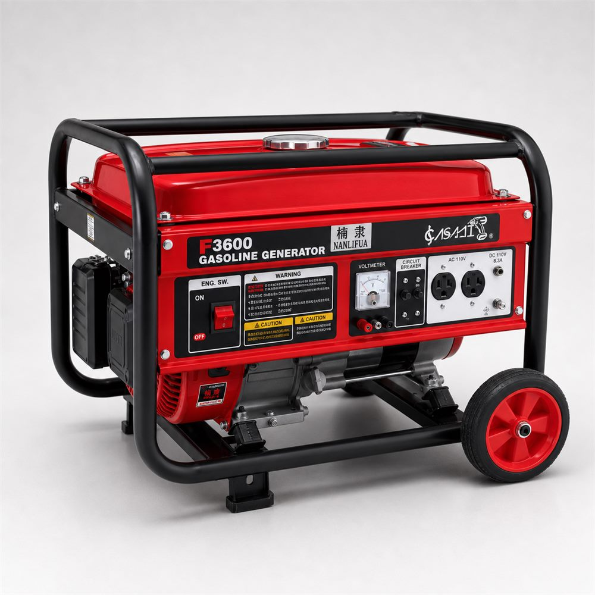
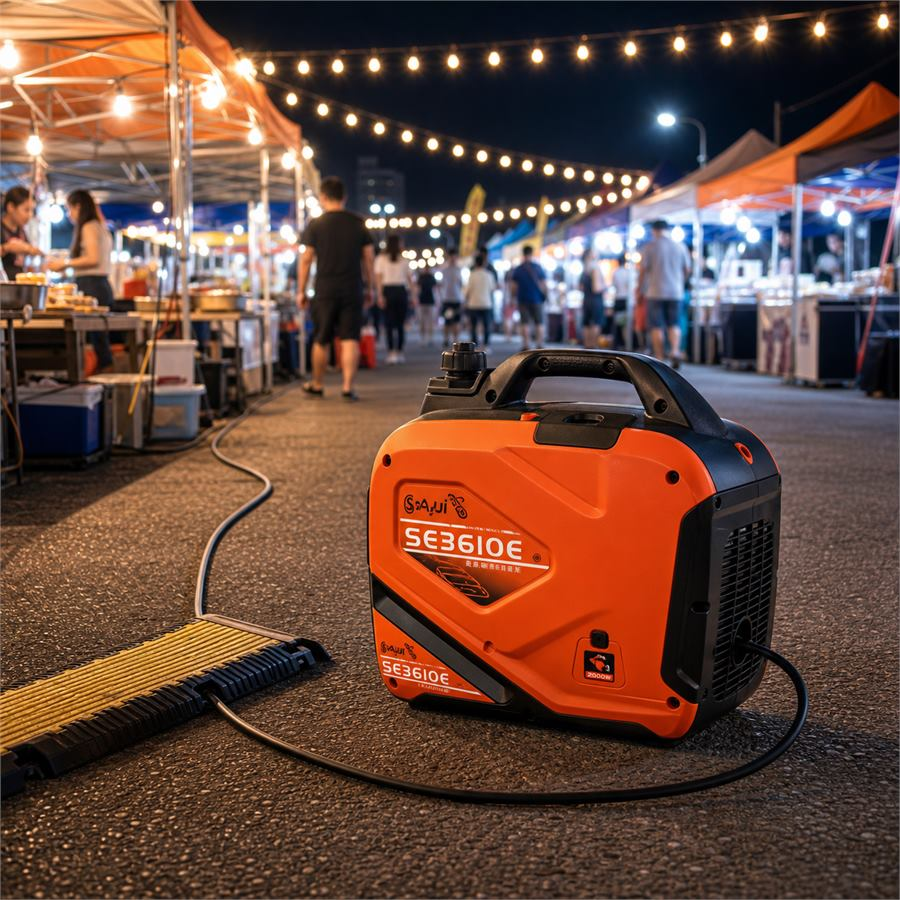
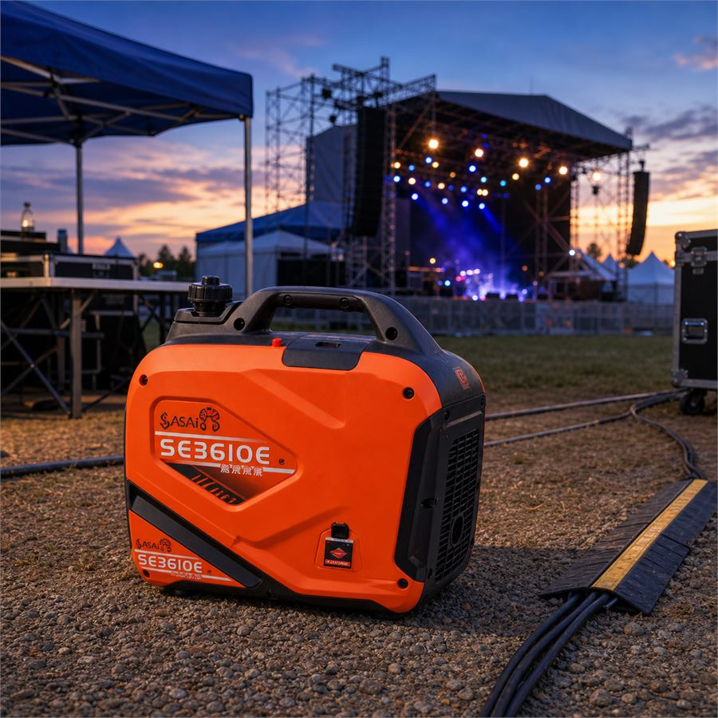
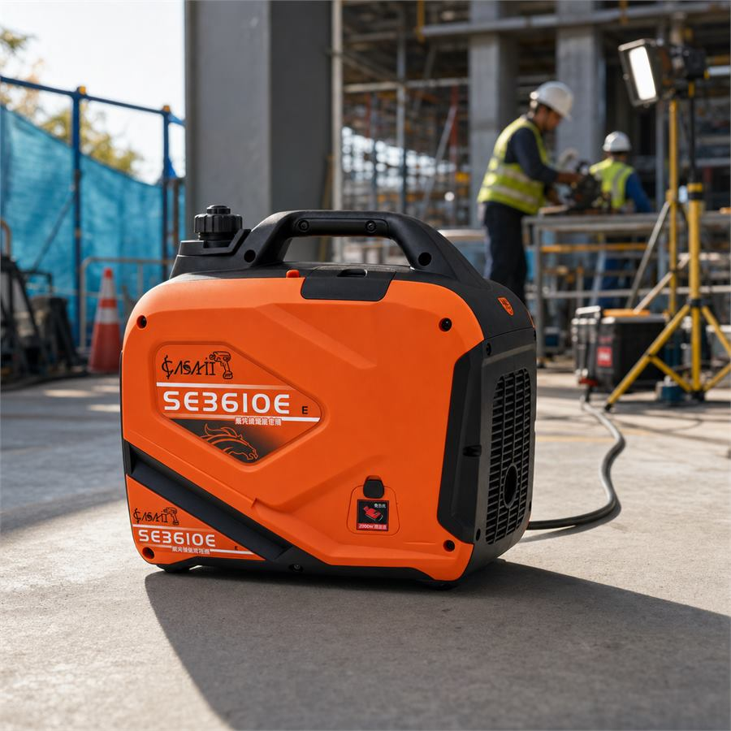
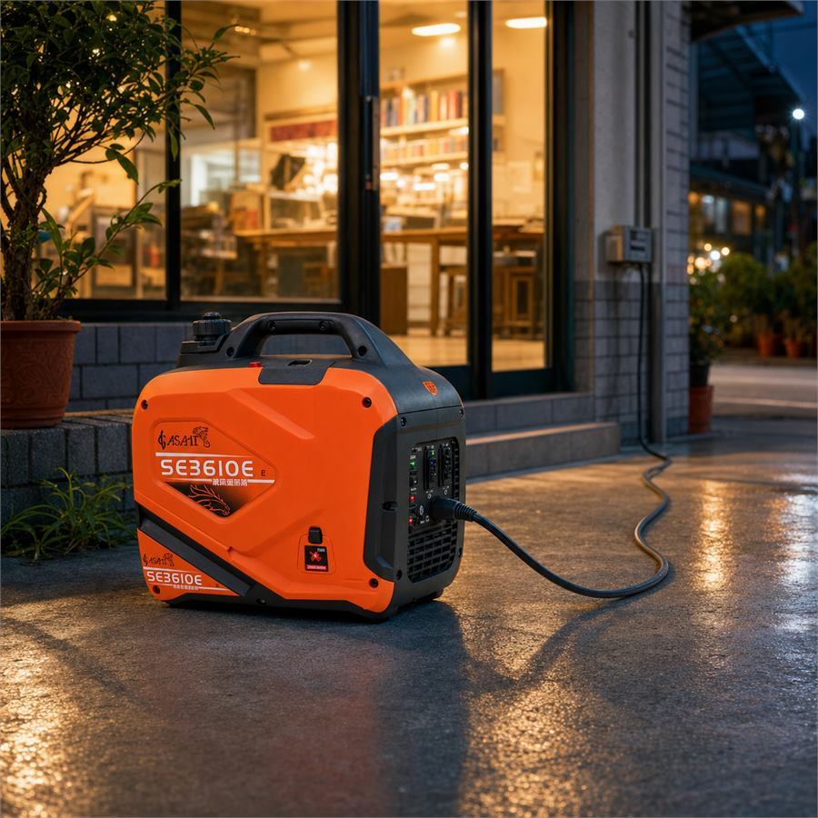
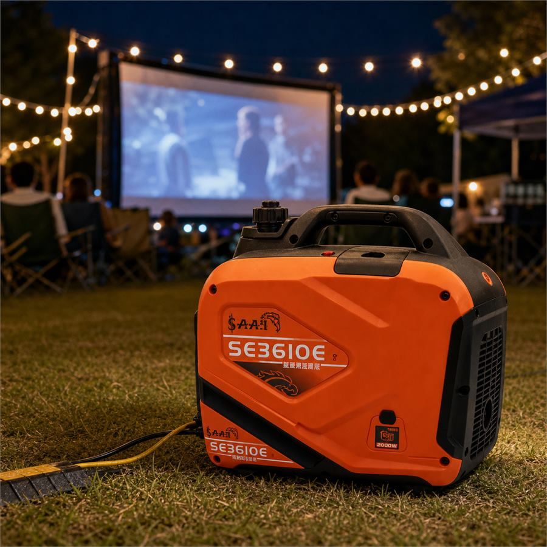
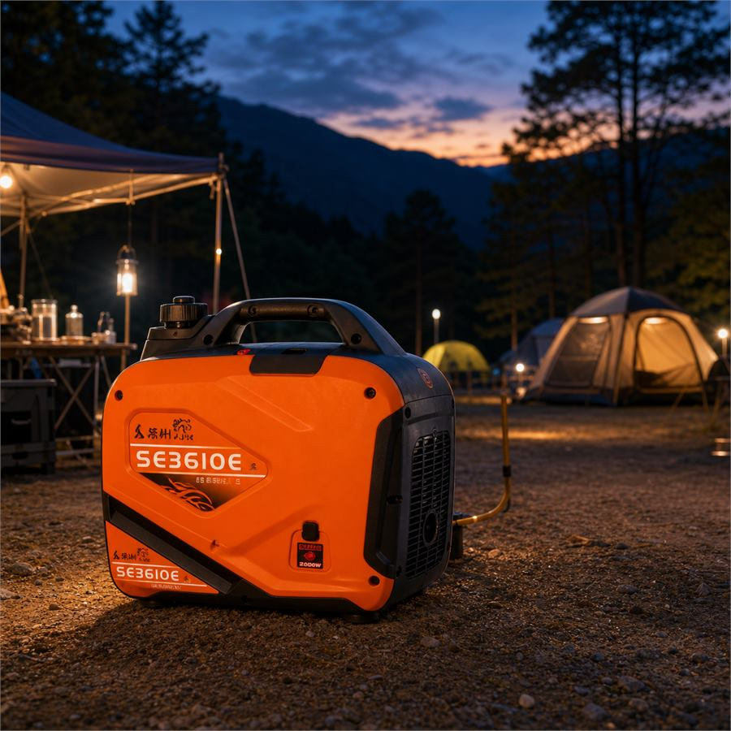
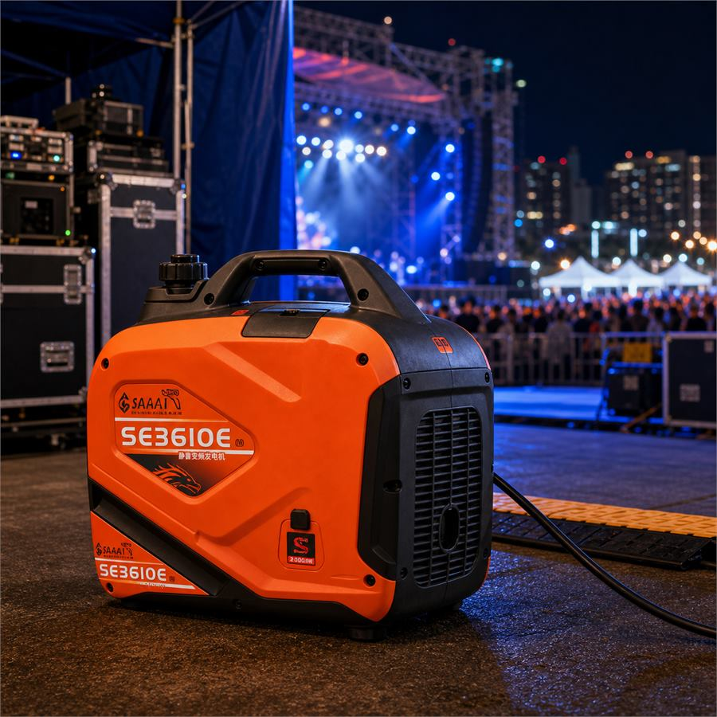
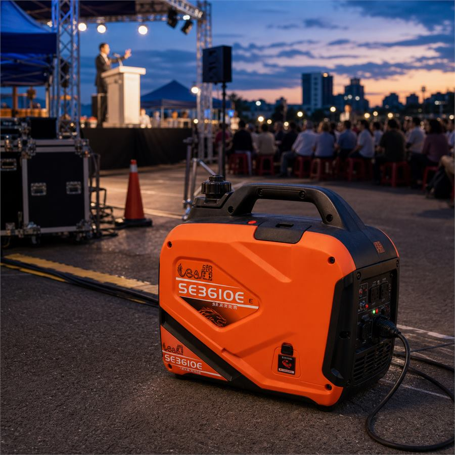

發電機出租介紹影片
影片介紹發電機出租可支援的活動臨時用電情境，包含市集攤商、戶外照明、音響設備、工程用電與停電備援等需求。
機型使用教學
靜音款 汽油發電機
靜音款發電機適合較重視音量的活動場域，例如社區活動、講座、婚禮、服務台或攤位附近的臨時供電。
一般款 汽油發電機
一般款發電機適合戶外市集、臨時工程、攤商設備、照明與較開闊場地的供電需求。
發電機出租前先看這篇
不知道要租一般款還是靜音款？瓦數、容量、安全距離一次看懂
我們整理了發電機出租指南，包含活動用電估算、額定瓦數與啟動瓦數差異、一般款/靜音款選擇、雨天與通風安全注意事項。適合市集、園遊會、戶外音響、臨時工程與停電備援先做功課。

發電機出租重點說明
發電機適合沒有固定電源、電力不足或需要備援電力的活動現場。常見於夜間市集、攤商設備、戶外音響照明、臨時工程與偏遠場地。
- ✓ 可依活動日期、地點與數量需求討論
- ✓ 可搭配其他活動設備一起規劃
- ✓ 建議提早確認檔期與進退場條件
發電機電力支援場景

夜間市集照明
發電機出租用於夜間市集照明，支援攤商燈具與基本用電需求。

戶外音樂祭音響
發電機出租用於戶外音樂祭音響設備，提供活動現場臨時電力。

臨時工程用電
發電機出租用於臨時工程用電，支援工具、照明與施工現場需求。

緊急停電備援
發電機出租用於緊急停電備援，降低活動或營業中斷風險。

戶外電影投影
發電機出租用於戶外電影投影，支援投影機、音響與照明設備。

偏遠山區露營活動
發電機出租用於偏遠山區露營活動，提供無固定電源場地備援。

跨年晚會舞台
發電機出租用於跨年晚會舞台，支援燈光、音響與活動設備。

選舉演講擴音設備
發電機出租用於選舉演講擴音設備，提供戶外集會臨時供電。
發電機出租常見問題
快速了解活動臨時供電與設備整合規劃。
發電機出租適合哪些活動？
適合夜間市集照明、戶外音樂祭音響、臨時工程用電、緊急停電備援、戶外電影放映、偏遠露營活動、跨年晚會舞台與選舉演講擴音設備。
如果活動需要更大的供電量，可以協助評估嗎？
可以。若現場有舞台音響、照明、攤商設備或更高供電量需求，租必達可先了解用電設備、活動時間與場地條件，並與水冷扇、活動帳篷需求一起安排評估與報價。
可以搭配水冷扇或活動帳篷一起租嗎？
可以。若活動同時需要供電、遮陽與降溫，可一起規劃發電機、水冷扇與活動帳篷，降低多方溝通成本。
租發電機需要提供哪些資訊？
建議提供活動日期、地點、使用設備、預計使用時間與現場是否已有可使用的固定電源或插座，方便評估是否需要發電機、延長線與現場供電安排。